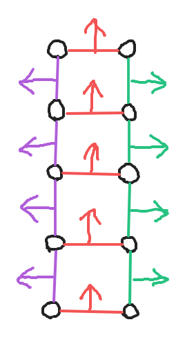
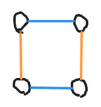
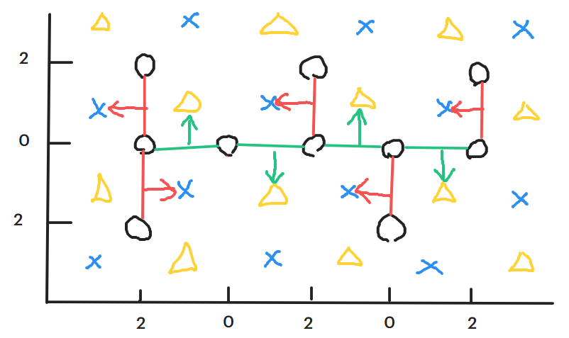

IOI 2021 場外心得
這是第一篇正式ㄉ文章ㄛ >////<，本來該是另一篇的，但是因為太懶了還沒有動工，這篇就變成第一個了 www。
前年的 IOI 2019 快結束的時候，看到 BB 搶下最後一題的首殺，拿到世界第 6 名，心情也不自覺的跟著變得激動雀躍，也讓我下定決心：只要還有認識的人在打，就一定要跟著看 scoreboard，甚至是同時打 Mirror（不知道為什麼 Yandex 沒開ㄌ），結果就變成線上了......
今年的 IOI 還是線上真的很可惜，少了那種在場外看著 scoreboard 跟著一起激動的感覺。當我想著自己一個人打會不會有點無聊的時候，正巧品庠來找我一起 virtual，就決定在 7/5 跟 7/7 的下午來打ㄌ！
Day -2 ~ Day 0 --- 測試賽 & NHDK TPR
覺得自己需要稍微寫一下題目才不會燒雞，所以我就去找了測試賽的題目來打，但因為場外沒有今年的測試賽，所以我去 oj.uz 寫去年的測試題，發現有四分之三跟今年一樣ㄟ，賺到（X）。
反正也沒有限時，那就慢慢寫ㄅ。
A - Handcrafted Gift (gift)
分數：\(100\) $( $\(10\)$/ $\(15\)$/ $\(20\)$/ $\(25\)$/ $\(30\)\()\)
水題，把 \(x = 1\) 的區間都 merge 起來剩下 RB 交錯放就好ㄌ。
B - Painting Squares (squares)
分數：\(100\) $( $\(10\)$/ $\(15\)$/ $\(20\)$/ $\(55\)\()\)
看到一眼就知道是要構造 de Bruijn sequence 的題目，但是忘記怎麼構造，所以先 random 生了一堆 01 字串來看看可以把 \(k\) 壓到多少（BioInformatics 後遺症 www）。放了大約一小時最好的結果就是 \(k = 15\)，就丟上去了。
想了幾個小時之後可恥的去看了 Wiki 寫了 inverse Burrows Wheeler transform 過了。
有個小插曲是我中途交的所有 \(k \in [15,
20]\) 的解也都拿到滿分，所以我就丟了一ㄍ issue
給他們，不知道會不會被回 owo 現在已經修好ㄌ
>////<。
C - Finding Routers (routers)
分數：\(100\) $( $\(16\)$/ $\(21\)$/ $\(23\)$/ $\(40\)\()\)
詢問得到的陣列會長 \([\,0, \ldots, 1, \ldots, i, \ldots, n-1\,]\) 這樣子，每個數字都會出現至少一次且值非嚴格遞增。可以二分搜出每個 \(p_c = x\) 且 \(p_{c+1} = x+1\) 的位置並得到 \(c\) 就是 \(x\) 跟 \(x+1\) 的中點。這樣 query 的次數會是 \(\mathcal{O}(n \lg \ell) \approx 20\,000\) 次，拿到 \(72.85\) 分。
不過，每一段的長度平均是 \(\frac{\ell}{n} = 100\)，如果可以先花幾次把陣列分塊，大概就只需要再 \(\mathcal{O}(n \lg \frac{\ell}{n}) \approx 7000\) 次詢問。自然而然的就會想到用 CDQ 分治來做，實作也很簡單。
範例 code
1 | void cdq(int nL, int nR, int pL, int pR) { |
實際上自己 random 的一些測資，大約會 query \(7200 \sim 7300\) 次。
D - Jelly Flavours (jelly)
分數：\(100\) $( $\(11\)$/ $\(24\)$/ $\(9\)$/ $\(10\)$/ $\(14\)$/ $\(32\)\()\)
每個物品只有 3 種狀態：不選、選 Store A、選 Store B。Subtask 3 提供了很重要的想法，如果先對 \(a_i\) 排序，之後會發現存在一個位置 \(p\) 使在區間 \([\,0, p)\) 的物品都會在 Store A 或 Store B 買；在區間 \([\,p, N)\) 的物品都會在 Store B 買或是不會買。
簡單的證明
以 A、B、X 代表在 Store A 買、在 Store B 買、不買的狀態。如果存在一個 A
在 X 後面 \([A, B, A, {\color{red}X}, B,
{\color{red}A}, X, B, X]\)，那把 A 跟 X 交換一定更好。
剩下就是 DP 了。你需要計算在一個前綴如何用 A 取代掉 B 來使剩下的 B 盡量小，這邊是一個簡單的背包問題，然後後綴就直接暴力計算 B 從小到大 B 可以買幾個。維護前綴是 \(\mathcal{O}(x)\)；維護後綴是 \(\mathcal{O}(n \lg n)\)。
總複雜度是 \(\mathcal{O}(nx + n^2 \lg n)\)。
NHDK Ten Point Round #7 (Div. 1)
7/4 晚上又一次覺得沒事做，想說來找一場感覺不會太難的比賽來打，就選到了 NHDK 辦ㄉ TPR ㄌ。
題目基本上都蠻簡單的（？，花了兩個小時慢慢把他寫完，就去睡覺ㄌ。
Day 1
開始之前先把兩天的題目都印好，因為開始之後就沒辦法跑出去印ㄌ。
A - 分發糖果 / Distributing Candies (candies)
分數：\(11\) $( $\(3\)$/ $\(8\)$/ $\(27\)$/ $\(29\)$/ $\(33\)\()\)
\(\mathcal{O}(nq)\) brute force # \(v_j > 0\) # \((l_i, r_i) = (0, n-1)\)
看到題目的第一眼覺得是吉如一線段樹裸題（至少 Subtask 3（盒子容量都相同）是裸題），因為回想起第一次在 IOIC 刻他花了大約 6 小時，而且這題看起來要維護最大、次大、最小、次小，所以把這題放在最後想。
Subtask 1（\(n, q \le 2000\)）是暴力，本來以為 Subtask 2（只有加值）要用線段樹，後來發現差分就好了 owo。拿到 \(11\) 分之後，覺得好像對 Subtask 4（每次操作都是全域）有點想法，發現了一些性質：
首先，可以把整個陣列排序，然後你會發現：
- 每個盒子剩下的空位（\(c_i - a_i\)）非嚴格遞增；
- 每次 \(\texttt{Add}(l_j, r_j, v_j)\) 操作完會有且僅有一段前綴是滿的（\(\exists\,p \Rightarrow (i \in [\,0, p) \Longleftrightarrow a_i = c_i)\)）；
- 每次 \(\texttt{Sub}(l_j, r_j, v_j)\) 操作完會有且僅有一段前綴是空的（\(\exists\,p \Rightarrow (i \in [\,0, p) \Longleftrightarrow a_i = 0)\)）。
接下來的要做的事會長這樣：
- 找到操作後全空（或全滿）的前綴 \([\,0, p)\)；
- 給 \([\,0, p)\) 那段區間一個代表全空（或全滿）的 tag；
- 更新前綴 \([\,0, p)\) 跟後面的交界處（\(a_{p-1}\) 跟 \(a_p\)）的差值。
範例 code
1 | for (int i = 1; i <= Q; ++i) { |
要找一個位置當下的值，就紀錄「上次變空（或變滿）是什麼時候」，再看那時候到現在的每次操作的 \(v_j\) 的和就好了。
範例 code
1 | int CheckVal(int idx, int qID) { |
求答案就是最後再問一輪就好ㄌ。
範例 code
1 | for (int i = 1; i <= N; ++i) ans[C[i].Y] = CheckVal(i, Q); |
最慘的是因為這題實作的部份想太久，最後來不及 de 完 bug，在結束後 6 分鐘才拿到 \(29\) 分，虧豹 QwQ。
B - 鑰匙 / Keys (keys)
分數：\(37\) $( $\(9\)$/ $\(11\)$/ $\(17\)$/ $\(30\)$/ $\(33\)\()\)
前 3 個 Subtask 都有 \(n, m \le 2000\)，用 \(n\) 次 DFS 就拿到了，因為之前在 TPOJ #6 pE 看過一樣的題目，所以就很順利的拿到這 \(37\) 分。
接下來想了很久，對後面的其他 Subtask 怎麼做都毫無頭緒。
C - 噴泉公園 / Fountain Parks (parks)
分數：\(55\) $( $\(5\)$/ $\(10\)$/ $\(15\)$/ $\(20\)$/ $\(20\)$/ $\(30\)\()\)
\(2 \le x_i \le 4\) # No \(2 \times 2\) square
因為這題看起來最有趣就第一個做ㄌ。前兩個 Subtask 都有 \(2 \le x_i \le 4\)，就算把所有可以連的邊都連起來也只會像下面那樣，一定有解。

接下來感覺 Subtask 4（只有一種蓋道路的方式）好像可做，不過感覺跟 Subtask 5（沒有任四個噴泉形成 \(2 \times 2\) 的方格）蠻像，都不會有像下面兩條橘線或藍線的情況，於是就想出一個跟 \(\bmod 4\) 相關的作法：

先隨便建一棵樹，對所有的平行 \(y\) 軸的邊（紅邊）把 \(x + y \equiv 2 \pmod{4}\) 的椅子（藍椅）指給他；對所有平行 \(x\) 軸的邊（綠邊）把 \(x + y \equiv 0 \pmod{4}\) 的椅子（黃椅）指給他。

因為不會有上面平行相鄰的狀況，所以不用擔心一張椅子被指到兩條平行的邊。
範例 code
1 | for (int i = 0; i < M; ++i) { |
有這 \(40\) 分讓我放心了許多，可是感覺有很多人會的 Subtask 3（\(2 \le x_i \le 6\)）一直沒有想法，燒雞的以為是位元 DP owo。
小結
- Day 1 總分：\(11\)\({}+{}\)\(37\)\({}+{}\)\(55\)\({}={}\)\(103\) 分
- Day 1 排名：\(106\)\(/351\)
因為在 IOI 當下也有看 scoreboard，所以清楚的記得有三位選手拿到 \(38\)\({}+{}\)\(37\)\({}+{}\)\(70\)\({}={}\)\(145\) 分，本來想說拿到 gift 的 \(29\) 分可以補上不太會寫的大資結，結果耍廢到什麼都沒有 QwQ。
開場打好模板，看了約半小時的題目，就開始寫水分ㄌ。我的策略是先給一題一個小時的時間寫，如果可以拿到精神分數就先換題。
在 C 跟 A 拿到水分之後意外有了 C Subtask 4+5 的想法，多花了一點時間把他寫完，再把 B 的水分拿掉之後總共的時間也才過一半而已，不過有了之前 vir JOISC 的經驗，我知道這之後我就會開始思考力下降，就算吃ㄌ一條巧克力也不會變好。果然，思考了一個小時，實作又花了一個半小時，剛剛好在結束之後作完。
希望明天的 Day 2 可以打好一點 owo，至少可以到銀牌線上ㄅ >////<。
Day 2
A - DNA 突變 / Mutating DNA (dna)
分數：\(100\) $( $\(21\)$/ $\(22\)$/ $\(13\)$/ $\(28\)$/ $\(16\)\()\)
今年最水 IOI 題，一開始看錯題以為是「交換兩個相鄰字元的位置」，結果交上去 WA 才發現根本不需要那麼麻煩 QAQ。
發現之後就把他水掉了，大概只有 Div2B ~ Div2C 左右的難度吧，但是這時已經經過兩個小時了，慘。
B - 地牢遊戲 / Dungeons Game (dungeons)
分數：\(50\) $( $\(11\)$/ $\(26\)$/ $\(13\)$/ $\(12\)$/ $\(27\)$/ $\(11\)\()\)
AC Solution # \(n \le 50\,000\) # Doubling on \(s_i = p_i\) # \(\#\{x : x \in s\} = 1\) # \(\#\{x : x \in s\} \le 5\) # \(\mathcal{O}(q(n + C))\) brute force
在寫這題之前先想到 Subtask 2（\(s_i = p_i\)）有個有趣的性質可以倍增，那就是如果英雄某一場打輸了，那他的力量至少會變成兩倍，所以就做 \(\mathcal{O}(\lg n)\) 次「最多可以連勝到哪裡」就會到終點了，複雜度大約是 \(\mathcal{O}(\lg n \lg C)\)。把暴力寫完之後也把倍增寫掉了，這時才發現倍增的作法可以一次過前兩筆 Subtask www。
接著還剩下約 70 分鐘，接下來只能想 Subtask 3（\(\#\{x : x \in s\} = 1\)）了，因為 Subtask 3 \(\subsetneq\) Subtask 4 \(\subsetneq\) Subtask 5 \(\subsetneq\) Subtask 6。有了剛剛 Subtask 2 的倍增想法，這邊就變的很好想了，只要同樣用倍增維護「力量 \(< s_0\) 走 \(2^i\) 步會到哪裡」跟「力量 \(\ge s_0\) 走 \(2^i\) 步會到哪裡」就能 AC 了，應該也很好寫......
結果我因為開的陣列層數剛剛好只有 \(\lceil{\lg(50\,000)}\rceil = 16\) 層，最後一層是代表可以一次走 \(2^{15} = 32\,768\) 步的值，結果在某些測資會爛掉，花了 10 分鐘寫完卻花了一小時 debug，最後還是真的找不出 bug 於是就倍增做完亂暴力，意外的在 4:56:56 拿到這唬爛來的 \(13\) 分。真是不知道該感到笑還是該哭呢 OwO。
話說，這題是前國手何達睿學長出的ㄛ >////<，最後面有他的心得文喵。
C - 位元移位暫存器 / Bit Shift Registers (registers)
分數：\(10\) $( $\(10\)$/ $\(11\)$/ $\(12\)$/ $\(25\)$/ $\(13\)$/ $\(29\)\()\)
\(s = 0\)、\(n = 2\)、\(k \le 2\)、\(q = 1000\)
光是題目敘述就有整整 6 頁，而且他的左移和右移的方向跟 grader 輸出的方向又讓我頭昏腦脹，很久才理解要怎麼實作出東西來。
根據我在「數位電路設計」學習耍廢的經驗，對兩個 \(2\)-bit 的數字 \(a, b\)，有以下式子：
\[\min\{a, b\}_1 = a_1 \cdot (\overline{a_1} \cdot \overline{a_0} + b_1 \cdot b_0 + \overline{a_1} \cdot b_1) + b_1 \cdot \overline{(\overline{a_1} \cdot \overline{a_0} + b_1 \cdot b_0 + \overline{a_1} \cdot b_1)} \notag\]
\[\min\{a, b\}_0 = a_0 \cdot (\overline{a_1} \cdot \overline{a_0} + b_1 \cdot b_0 + \overline{a_1} \cdot b_1) + b_0 \cdot \overline{(\overline{a_1} \cdot \overline{a_0} + b_1 \cdot b_0 + \overline{a_1} \cdot b_1)} \notag\]
我就花了一個多小時在把這個寫出來，結果還用了 \(26\) 次操作，只有拿到 \(10\) 分，然後我就放棄了。
小結
- Day 2 總分：\(100\)\({}+{}\)\(50\)\({}+{}\)\(10\)\({}={}\)\(160\) 分
- Day 2 排名：\(105\)\(/351\)
多虧有印出題目，不然電腦先卡了大約 20 分鐘應該就會先死去ㄌ www。
策略跟 Day 1 是一樣的，但是因為 dna 跟 register 都太特別了，導致今天根本沒能按照計畫進行。
嘛，題目應該要多讀幾次的，最好可以把自己的理解寫出來再對比一次，不然在「看錯題目」這種小錯誤上花整整一小時還是很燒雞ㄉ，還有有時候遇到真的超級麻煩的題目應該先不要管他，只要祈禱大家都拿不到分數就好了。
今天整體狀況比較平靜，多虧 dna
超水，讓我沒有遇到「會做卻沒時間做」的狀況（也有我直接把 register
當成實作題的原因啦），Day 2 花在寫 code debug 的時間就比 Day
1 多出不少呢，能跟 Day 1 有著幾乎相同的名次也很令我意外吶。
總結
- 總分：\(11\)\({}+{}\)\(37\)\({}+{}\)\(55\)\({}+{}\)\(100\)\({}+{}\)\(50\)\({}+{}\)\(10\)\({}={}\)\(263\) 分
- 排名：\(104\)\(/351\)
- 牌線：\(373\)\(/\)\(289\)\(/\)\(203\)
如你所見，Day 1、Day 2、總排名呈等差數列，而且有越來越好的趨勢 www。如果 Day 1 再多 6 分鐘就有壓線銀牌ㄌ QwQ。
目前覺得最大的缺陷是沒有調整好自己的心態，對分數沒有執著，有點把這種 virtual 當成在玩的感覺（？
現在，平常在打 ICPC 的時候也是這樣，甚至連正式比賽都有點提不起勁。如果沒辦法對得獎、對分數有執著，基本上就只能當個休閒選手了吧......
希望這個暑假可以讓我重新拿回學習新東西的熱情ㄅ >////<。